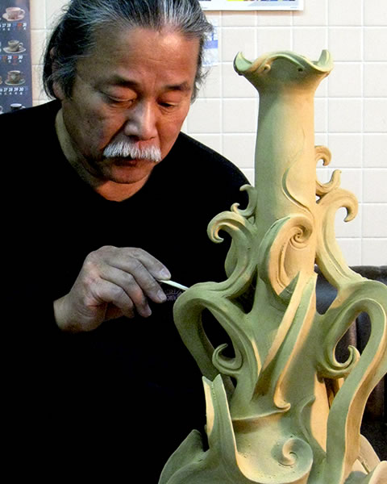

１９４７年 広島県福山市生まれ。
１９６８年 武蔵野美術大学短期大学部油絵学科卒業。
２０１３年現在 岡山県にて猪風来美術館を運営。
=∴=∵=∴=∵=∴=∵=∴=∵=∴=∵=∴=∵=∴=∵=∴=∵=∴=∵=∴=∵=∴=∵=∴=∵=∴=∵=∴=
猪風来は“縄文の美”を復活した縄文造形家であり、独自の「多次元」造形法による猪風来縄文様式を創始した
現代縄文アーティストです。
21世紀の現代芸術シーンにスパークする猪風来の新縄文スタイルデザインによる作品は、今日の新たな表現の
流れとなっている新縄文アート運動の旗手として、あらゆる文化芸術の分野に影響を与えている。
=∴=∵=∴=∵=∴=∵=∴=∵=∴=∵=∴=∵=∴=∵=∴=∵=∴=∵=∴=∵=∴=∵=∴=∵=∴=∵=∴=
日本の縄文考古学研究の進展と芸術的評価の高まりの中で、近年ではイギリスの大英博物館で「縄文土偶」展
が開催、また2012年猪風来の出演したＮＨＫ日曜美術館「土偶」の放映など、“縄文の美”が世界的に注目を集め
ている。
縄文造形は日本の伝統美であり、日本列島の各地で一万年間にわたって花開いた美しい文様の芸術です。
長く歴史から途絶えていたこの“縄文の美”は、猪風来の手によって二〇〇〇年ぶりの復活が成し遂げられました。
猪風来は1976年頃から縄文土器復元を志し、1978年頃には千葉県加曾利貝塚博物館土器づくり同好会で活動、
縄文野焼き技法を復活。
1986年からは北海道に移住し、原野に竪穴式住居を建てアトリエとした。以後二〇年間自給自足の縄文暮らし
を続け、大自然の息吹から縄文の造形精神を体得する。
その中で縄文野焼きの作品群である「生命のシリーズ」「情念のシリーズ」「森羅万象シリーズ」
「土夢華シリーズ」を制作し発表。縄文野焼き技法の第一人者と呼ばれる。
以降、2001年南米エクアドル・ハトゥンパンバ村へ野焼き探訪の旅、2002年スペインでの作陶、2007年
フランスで縄文野焼き実演、2010年イギリス Unearthed 展ワークショップでの講演など、海外でも精力的に活動。
=∴=∵=∴=∵=∴=∵=∴=∵=∴=∵=∴=∵=∴=∵=∴=∵=∴=∵=∴=∵=∴=∵=∴=∵=∴=∵=∴=
2005年岡山県新見市法曽に移住し、猪風来美術館を開館。地元に伝わる一二〇〇年の伝統ある古陶法曽焼を
一五〇年振りに復興。穴窯焼成による陶磁土の創作にも取り組む。
縄文野焼き技法と猪風来独自の文様造形を基盤として、陶磁土と施釉を用いた現代縄文芸術を確立する。
また、縄文文様を鮮やかな色彩と感性でデザインした平面作品である彩色縄文文様画を創作。
現在も芸術の新しい風となって、旺盛な創作活動を続けている。
=∴=∵=∴=∵=∴=∵=∴=∵=∴=∵=∴=∵=∴=∵=∴=∵=∴=∵=∴=∵=∴=∵=∴=∵=∴=∵=∴=
これらの作品群は“縄文の美”であるとともに、これまでに類例のない表現世界“猪風来様式の美”として認知
されています。
新縄文スタイルの表現は現在、立体と平面、音楽や詩、アニメーションや建築などあらゆる方面への応用発展
の試みがなされ、20世紀芸術の終焉から今日の芸術分野の閉塞感を打破する、新縄文アート運動の流れとして
注目されています。
=∴=∵=∴=∵=∴=∵=∴=∵=∴=∵=∴=∵=∴=∵=∴=∵=∴=∵=∴=∵=∴=∵=∴=∵=∴=∵=∴=
「縄文スパイラルアートは、豊饒をねがい、大自然の霊感ある生命と魂の造形をデザインした、おそろしいほど
の凄み深き美しさと、華麗でまばゆいばかりの美しさを兼ねそなえたものを追求している」（猪風来）
１９４７年 広島県福山市生まれ。
１９６８年 武蔵野美術大学短期大学部油絵学科卒業。
１９７６年 山野にて縄文土器片を採集し感動、縄文土器復元を志す。
１９７８年 千葉県加曾利貝塚博物館・土器作り同好会にて活動。
１９８６年 北海道石狩の大自然の中へ移住。竪穴住居をアトリエとし自給自足の縄文暮らし。
縄文野焼き技法による創作縄文土器・土偶を多数制作。
１９９６年 『猪風来の北海道から沖縄 列島縦断展』
丸木美術館(埼玉)、牧方市民ギャラリー(大阪)、佐喜真美術館(沖縄)など八カ所にて作品展示。
１９９９年 演出家宮本亜門邸（沖縄）大広間に縄文野焼き作品「縄文の渦」大レリーフを設置。
２００１年 南米エクアドル・野焼き土器づくりの村ハトゥンパンバへ野焼き探訪の旅。
同年 鳥取県教育委員会に招かれ、ムキバンダ遺跡広場にて縄文野焼きと弥生式野焼きの実演指導。
同年 『岡本太郎と縄文展』に高さ120㎝のハート形土偶を出品。全国各地で巡回展示。
２００２年 スペイン・ベイタイ村で作陶。
同村にて『熱烈にBeltall美術展』を開催。名誉ベイタイ賞受賞。
２００５年 岡山県新見市法曽に移住。猪風来美術館を開館する。
以降毎年、美術館前広場で春秋に縄文野焼き祭りを開催し、縄文造形・野焼き技法体験の日本の
中心拠点として注目される。
同年 中越地震・震災復興モニュメント「大地の女神」を制作。
新潟県立歴史博物館玄関前広場に設置。
２００７年 地元法曽に伝わる古陶・法曽焼を一五〇年ぶりに復興。
穴窯焼成による縄文陶磁造形作品の制作。
同年 フランス・サン＝シール＝シュール＝ロワール市にて縄文野焼きを実演指導。
２０１０年 イギリス・セインズベリー日本藝術研究所に招かれ、ノリッジ市にて
『Unearthed(作られしもの)展』特別ワークショップで縄文造形論の講演。
２０１１年 NHK-BSプレミアム「日本美術の一万年～魂の縄文アート！土偶」に出演。遮光器土偶の再現制作。
２０１２年 NHK日曜美術館「土偶」に出演。国宝・中空土偶(函館市著保内野遺跡) の再現制作。
また「縄文の太陽」「大地の女神」などの作品紹介。